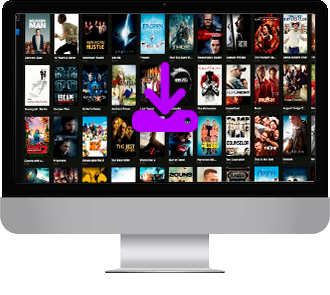

StarPremium
Melhore sua experiência com Premium!
Após o fim do seu teste gratuito do plano StarPremium, sua assinatura se renovará automaticamente a R$ 47,90 por mês. Você poderá cancelar a qualquer momento.
Aproveite mais com Premium!
-
Novos episódios logo após a exibição
-
Assista sem anúncios
-
Assista offline
-
Acesso simultâneo em múltiplas telas
Explore uma seleção incrível de filmes e séries!
Com atualizações diárias, sempre trazemos novos lançamentos e produções de alta qualidade, garantindo opções frescas e envolventes para o seu entretenimento a qualquer momento!
Assine StarPremium e aproveite

Baixe e assista a qualquer hora!
Esqueça as preocupações com conexão ou limitações de horário. Com o StarPremium, você baixa todo o conteúdo que ama e aproveita offline, sem depender da internet. Não perca tempo com outros serviços, faça parte da StarWatch agora!
Tenha seu teste gratuito de 7 dias agora mesmoStarWatch em qualquer dispositivo!
-

TV
-

Computador
-

Celular
Perguntas frequentes
O StarWatch oferece planos com múltiplos perfis?
Sim! O StarWatch permite que você crie até cinco perfis diferentes em uma mesma conta, garantindo uma experiência personalizada para cada usuário, com suas próprias recomendações e histórico de visualização.
Como posso assistir ao conteúdo offline no StarWatch?
No StarWatch, você pode baixar seus filmes e séries favoritos para assisti-los sem precisar de conexão com a internet. Basta clicar no ícone de download disponível em cada título e acessá-lo quando quiser, mesmo offline.
Quais dispositivos são compatíveis com o StarWatch?
O StarWatch está disponível em smartphones, tablets, computadores, smart TVs e consoles de videogame. Assim, você pode acessar seu conteúdo favorito de onde estiver, no dispositivo que preferir.
O StarWatch tem suporte a diferentes resoluções de vídeo?
Sim! O StarWatch oferece conteúdo em diversas resoluções, desde SD até 4K Ultra HD, para garantir a melhor experiência de acordo com sua velocidade de internet e dispositivo.